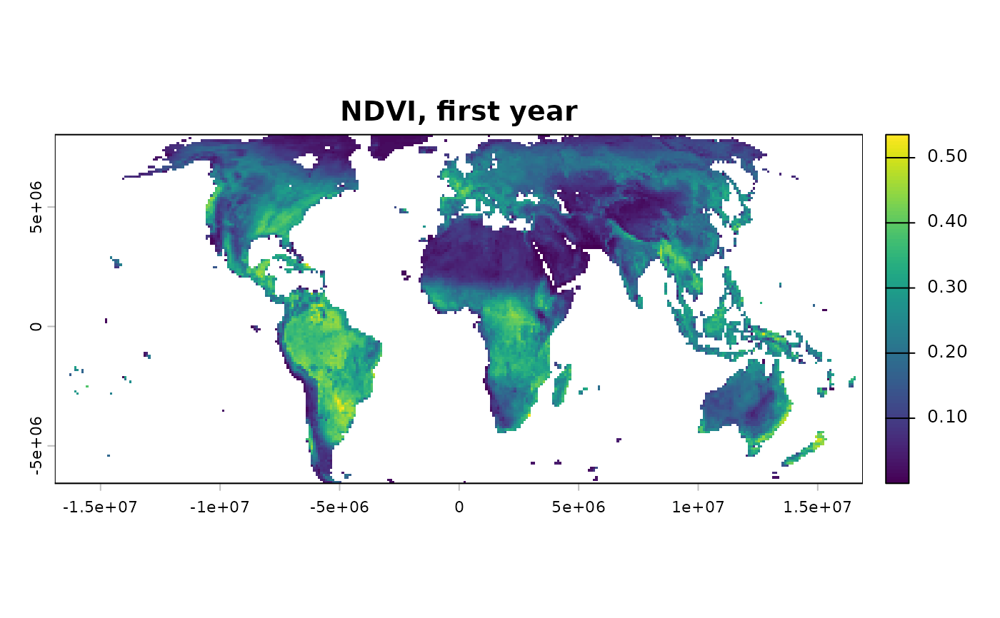

Read and chronologically order a folder of raster files
Source:R/read_stack.R
read_ordered_stack.Rdlist.files() sorts alphabetically, not numerically: with file names
that lack leading zeros ("image1", ..., "image10"), "image10"
sorts before "image2" – the same problem regardless of whether the
numbering is a year, a time step, or any other sequential index.
Using that order silently invalidates a trend analysis with no
visible error anywhere in the code. This function instead extracts
an explicit ordering number from each file name and sorts
numerically by it, then prints and (optionally) plots a verification
of the detected order.
Usage
read_ordered_stack(
dir,
pattern = "\\.(tif|tiff|nc|grd|img|vrt|asc)$",
order_regex = NULL,
candidate_regex = c("year([0-9]+)", "_A([0-9]{4})", "(19[0-9]{2}|20[0-9]{2})",
"([0-9]{4})", "([0-9]+)"),
var = NULL,
report = TRUE,
verbose = TRUE
)Arguments
- dir
Character. Path to a folder containing one raster file per time step, all with the same extent, resolution, and CRS.
- pattern
Character. Regular expression used to list candidate files. The default matches common raster extensions:
.tif,.tiff,.nc,.grd,.img,.vrt, and.asc. Supply another expression for any additional format supported byterra::rast()/GDAL. The extension identifies candidate files; actual readability and compatible geometry are still validated when the stack is opened.- order_regex
Character or
NULL. A regular expression with a single capture group,"(...)", that extracts the ordering number from each file name – e.g."year([0-9]+)"extracts25from"year25.tif". IfNULL(default), several common patterns are tried automatically (year-like"year25", MODIS-style"_A2000065", a bare 4-digit year, or any run of digits) and the first one that extracts a unique number from every file is used. If none does, the function stops rather than silently falling back to alphabetical order.- candidate_regex
Character vector of patterns tried automatically when
order_regexisNULL. Most users should never need to modify this.- var
Character or
NULL. For NetCDF input only: variable name to read from each file if each file has more than one variable. LeaveNULLfor ordinary single-variable raster formats.- report
Logical. If
TRUE(default), draw a diagnostic plot of stack position vs. detected order number (a perfect diagonal line confirms correct ordering). Deviations from the diagonal immediately reveal files that would otherwise have been read in the wrong temporal order.- verbose
Logical. Print progress messages and elapsed time.
Value
A terra::SpatRaster with one layer per input file, ordered
chronologically, with layer names taken from the (de-duplicated) file
names, and the detected order numbers stored as proper time metadata
(terra::time(result, "years")) rather than discarded after the
verification step above – used, for instance, as the default t
in inspect_ts_cell(), and by any future function in this package
requiring explicit time coordinates.
Details
Works with raster formats readable by terra::rast(), subject to the
GDAL drivers available in the user's terra installation. The default
pattern covers common GeoTIFF, NetCDF, native raster, ERDAS Imagine,
virtual raster and ASCII-grid extensions; other supported formats can
be selected through pattern. Each file must represent one time step.
For a single multi-temporal NetCDF file instead, use
read_netcdf_stack().
Why this matters more than it looks: a trend analysis assumes
that successive raster layers represent the true chronological
sequence. If the temporal order is wrong, every subsequent
statistical result becomes invalid even though the analysis
completes without any error – there is nothing in a Mann-Kendall
test's own output that could reveal a shuffled input series. Unlike
generic file readers, this function deliberately refuses to proceed
when the temporal order cannot be established unambiguously, rather
than silently reverting to alphabetical file names. This same
philosophy – surface a silent risk rather than let it pass
unnoticed – recurs throughout this package: multiple-testing
correction (fdr_correction()), the spatial-autocorrelation
diagnostic behind it (spatial_autocorrelation()), and the
monotonic-trend-only assumption checked informally in "Monotonic
trends only" sections elsewhere (trend_test(),
slope_estimator()) are the same instinct applied to different
risks.
This function does not use list.files()'s own ordering, does not
attempt to parse arbitrary or ambiguous date formats, and does not
guess when no candidate pattern extracts a unique number from every
file – it stops instead, on the view that it is better to stop than
to silently analyse the wrong chronology.
Function type: Data import function – builds the ordered
SpatRaster expected by the analytical functions. It performs no
statistical inference.
Methodological details
Temporal ordering
Ordering is derived from explicit numeric labels in file names, never from alphabetical order. Ambiguous, duplicated, or incomplete labels stop the import rather than trigger an undocumented fallback.
Monthly or seasonal data
This function only orders layers chronologically – it does not know
or care whether the data has a seasonal cycle (e.g. monthly values with
an annual signal). If it does, deseasonalise with compute_anomalies()
before passing the result to trend_test(),
slope_estimator(), or workflow_tst(), all of which assume a
monotonic trend,
not a periodic one. Ordering and deseasonalisation solve different
problems.
Limitations
Files must share compatible raster geometry and each file must represent one time step. The function deliberately does not attempt to infer arbitrary calendar formats that are not captured by the supplied or candidate regular expressions.
Quality assurance
Tests cover year and year-month filename parsing, chronological
ordering, duplicate and ambiguous labels, mixed geometries, variable
selection, preserved terra geometry/time metadata, and informative
failures for empty or invalid inputs. See ?sptrends for the
package-wide release-check protocol.
See also
Other Data import functions:
read_netcdf_stack()
Examples
# \donttest{
# The bundled dataset contains one real NDVI GeoTIFF per year.
s <- read_ordered_stack(example_data("vhp_ndvi"))
#> Temporal order auto-detected with pattern '(19[0-9]{2}|20[0-9]{2})'.
#> Temporal order verification (mandatory, cannot be skipped):
#> stack_position detected_number file
#> 1 1982 VHP_SMN_annual_ndvi_1982.tif
#> 2 1983 VHP_SMN_annual_ndvi_1983.tif
#> 3 1984 VHP_SMN_annual_ndvi_1984.tif
#> 4 1985 VHP_SMN_annual_ndvi_1985.tif
#> 5 1986 VHP_SMN_annual_ndvi_1986.tif
#> 6 1987 VHP_SMN_annual_ndvi_1987.tif
#> 7 1988 VHP_SMN_annual_ndvi_1988.tif
#> 8 1989 VHP_SMN_annual_ndvi_1989.tif
#> 9 1990 VHP_SMN_annual_ndvi_1990.tif
#> 10 1991 VHP_SMN_annual_ndvi_1991.tif
#> 11 1992 VHP_SMN_annual_ndvi_1992.tif
#> 12 1993 VHP_SMN_annual_ndvi_1993.tif
#> 13 1994 VHP_SMN_annual_ndvi_1994.tif
#> 14 1995 VHP_SMN_annual_ndvi_1995.tif
#> 15 1996 VHP_SMN_annual_ndvi_1996.tif
#> 16 1997 VHP_SMN_annual_ndvi_1997.tif
#> 17 1998 VHP_SMN_annual_ndvi_1998.tif
#> 18 1999 VHP_SMN_annual_ndvi_1999.tif
#> 19 2000 VHP_SMN_annual_ndvi_2000.tif
#> 20 2001 VHP_SMN_annual_ndvi_2001.tif
#> 21 2002 VHP_SMN_annual_ndvi_2002.tif
#> 22 2003 VHP_SMN_annual_ndvi_2003.tif
#> 23 2004 VHP_SMN_annual_ndvi_2004.tif
#> 24 2005 VHP_SMN_annual_ndvi_2005.tif
#> 25 2006 VHP_SMN_annual_ndvi_2006.tif
#> 26 2007 VHP_SMN_annual_ndvi_2007.tif
#> 27 2008 VHP_SMN_annual_ndvi_2008.tif
#> 28 2009 VHP_SMN_annual_ndvi_2009.tif
#> 29 2010 VHP_SMN_annual_ndvi_2010.tif
#> 30 2011 VHP_SMN_annual_ndvi_2011.tif
#> 31 2012 VHP_SMN_annual_ndvi_2012.tif
#> 32 2013 VHP_SMN_annual_ndvi_2013.tif
#> 33 2014 VHP_SMN_annual_ndvi_2014.tif
#> 34 2015 VHP_SMN_annual_ndvi_2015.tif
#> 35 2016 VHP_SMN_annual_ndvi_2016.tif
#> 36 2017 VHP_SMN_annual_ndvi_2017.tif
#> 37 2018 VHP_SMN_annual_ndvi_2018.tif
#> 38 2019 VHP_SMN_annual_ndvi_2019.tif
#> 39 2020 VHP_SMN_annual_ndvi_2020.tif
#> 40 2021 VHP_SMN_annual_ndvi_2021.tif
#> 41 2022 VHP_SMN_annual_ndvi_2022.tif
#> 42 2023 VHP_SMN_annual_ndvi_2023.tif
 #> Stack built: 42 layers, 146 x 338 cells.
#> >> [read_ordered_stack()] elapsed: 0.06 s
terra::nlyr(s)
#> [1] 42
terra::time(s, "years")
#> [1] 1982 1983 1984 1985 1986 1987 1988 1989 1990 1991 1992 1993 1994 1995 1996
#> [16] 1997 1998 1999 2000 2001 2002 2003 2004 2005 2006 2007 2008 2009 2010 2011
#> [31] 2012 2013 2014 2015 2016 2017 2018 2019 2020 2021 2022 2023
terra::plot(s[[1]], main = "NDVI, first year")
#> Stack built: 42 layers, 146 x 338 cells.
#> >> [read_ordered_stack()] elapsed: 0.06 s
terra::nlyr(s)
#> [1] 42
terra::time(s, "years")
#> [1] 1982 1983 1984 1985 1986 1987 1988 1989 1990 1991 1992 1993 1994 1995 1996
#> [16] 1997 1998 1999 2000 2001 2002 2003 2004 2005 2006 2007 2008 2009 2010 2011
#> [31] 2012 2013 2014 2015 2016 2017 2018 2019 2020 2021 2022 2023
terra::plot(s[[1]], main = "NDVI, first year")

# }